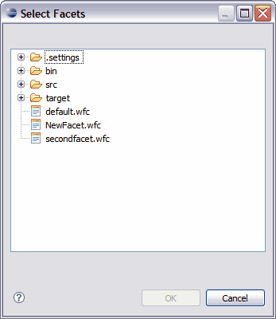
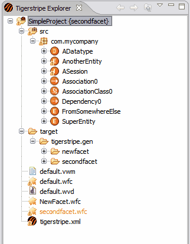

The Facets tab in the Tigerstripe Perspective allows you to define facets to use with your Tigerstripe project. You can explicitly assign facets using this tab. As a result, when you generate your project, all the selected plug-ins will run in the context of each facet assigned. For more information about generating your project with an assigned facet, refer to Project Generation.


You can generate files in separate directories by specifying a directory name for each facet referenced in your Tigerstripe Perspective.
To specify a facet directory name
- Navigate to the Facets tab in your Tigerstripe Perspective.
- Click the facet from the list of facets. The facet information displays.
- Enter the facet output directory in the Output Directory text box.
- Click Save to save your project changes and generate your project.
Under the target directory in the Tigerstripe Explorer, you will find the folder(s) that represent the output directories you entered in the Facets tab prior to generation.
For example, in the following image there are two directories under the tigerstripe.gen directory:
- newfacet
- secondfacet
Within these directories, you will find the files specific to each facet.


© copyright 2005, 2006, 2007 Cisco Systems, Inc. - All rights reserved